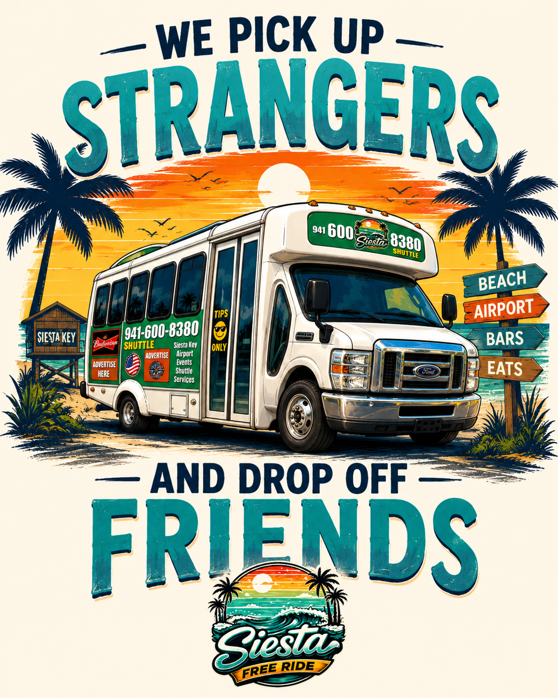

Weather + waterStormy Sunday with an 87.7°F Gulf.
Recorded Sarasota conditions reached 90°F after a 75°F low, with thunderstorms, heavy rain and very warm Gulf water.
90°F Recorded high75°F Recorded low87.7°F Gulf water
Read the full report →